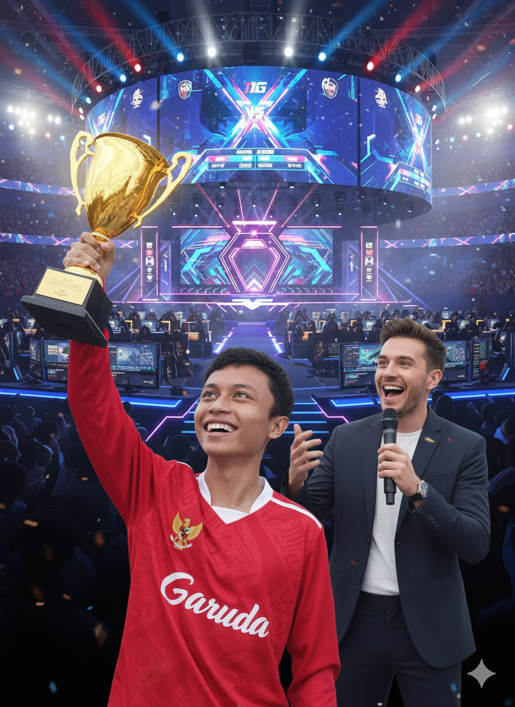

Jakarta, 3 Februari 2026 — Dunia esports kembali dibuat gempar. Seorang pemain asal Indonesia, Muhammad Rifky Noufal, resmi dinobatkan sebagai Juara Dunia eFootball 2026 setelah menaklukkan lawan-lawannya di partai final yang digelar megah di Tokyo, Jepang. Rifky tampil luar biasa sejak babak penyisihan hingga final. Di pertandingan puncak, ia berhasil mengalahkan wakil Brasil dengan skor meyakinkan 3–1 dalam laga sengit yang disaksikan jutaan penonton secara langsung melalui platform streaming global. Keberhasilan ini menjadikan Muhammad Rifky Noufal sebagai pemain Indonesia pertama yang meraih gelar juara dunia eFootball, sekaligus mengharumkan nama bangsa di kancah esports internasional. “Ini bukan hanya kemenangan saya, tapi kemenangan untuk Indonesia,” ujar Rifky dengan penuh haru saat sesi wawancara pasca-pertandingan. Ia juga mengucapkan terima kasih kepada keluarga, pelatih, dan seluruh pendukung yang terus memberinya semangat. Federasi Esports Indonesia (IESPA) menyambut prestasi ini dengan bangga dan menyebut kemenangan Rifky sebagai tonggak penting perkembangan esports nasional. Pemerintah pun memberikan apresiasi atas dedikasi dan kerja kerasnya yang telah membawa Indonesia ke puncak dunia. Dengan gelar juara dunia ini, Muhammad Rifky Noufal diprediksi akan menjadi ikon baru esports Indonesia dan inspirasi bagi generasi muda yang bercita-cita meniti karier di dunia game kompetitif.
